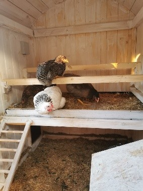
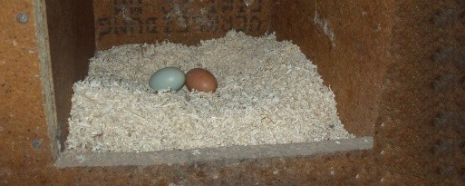
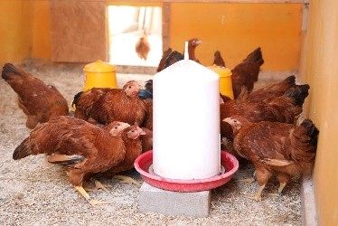
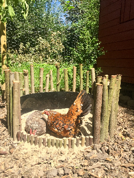
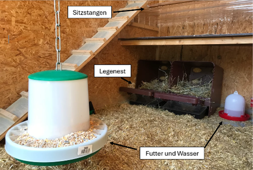

In einem Hühnerstall gibt es einige wichtige Dinge, damit sich
die Hühner wohlfühlen. Hühner brauchen Sitzstangen (Bild 1), auf denen sie
nachts schlafen können. Ausserdem gibt es Nester, in denen die Hennen
ihre Eier legen (Bild 2). Im Stall müssen auch Futter und frisches Wasser
vorhanden sein (Bild 3). Auf dem Boden liegt meist Einstreu, zum Beispiel Stroh
oder Holzspäne, damit der Stall sauber und warm bleibt. Man könnte den
Hühnern noch einen Gefallen machen, indem man ihnen ein Sandbad (Bild 4)
bereitstellt, in dem sie sich wälzen. Das hilft ihnen, ihr Gefieder
sauber zu halten und Parasiten loszuwerden. Da es Hühner lieben zu
scharren, ist es sinnvoll, wenn man dafür Platz im Gehege einrechnet.
Wichtig ist auch, dass der Stall sicher gebaut ist, damit Raubtiere
nicht hineinkommen.




